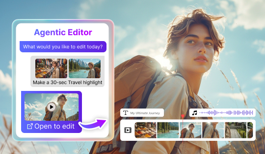
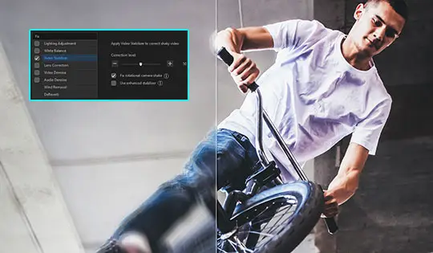

powerdirector 里藏着的五个功能，我翻了三个月才找到
你以为威力导演只是普通的视频剪辑器？其实它还藏着图片生视频、动作模仿、全景剪辑等冷门但好用的进阶功能，翻到底才发现自己之前一直在用个皮毛版本。
引子：我是怎么发现这些东西的
说实话，我用 powerdirector 剪视频也有两年多了，一直把它当「能加转场、能剪时间轴」的普通剪辑软件在用。直到去年某次为了做一个旅行 Vlog，逼着自己把菜单从顶到底翻了一遍——才发现它藏着一堆我连听说都没听说过的功能。而且官方几乎不怎么宣传，官网的功能列表里根本找不到完整的说明，只能靠自己摸。
这篇就把我挖到的五个隐藏功能和盘托出，每个都给你说清楚在哪、怎么开、什么时候真的有用。顺手说一句，安装包可以从powerdirector下载拿到，懒得找的直接去就行。
功能一：AI 图片生成视频——让老照片自己动起来
你肯定有过这种经历：翻到几年前旅行拍的照片，觉得挺好，但就是一张一张的没什么意思。powerdirector 里有个 AI 功能能把静态照片变成动态短片，还能自动加运镜、光影流动，甚至配环境音。
入口藏在 AI 面板里，叫「图片生成视频」——官方升级过好几轮，2025 年 8 月那次之后稳定性好了不少。我试过把五年前的川西旅行照丢进去，生成出来的效果是：云朵在飘、树叶在晃，还有一点微弱的风声，整个 Vlog 开场瞬间就活了。
这个功能有个进阶分支叫「动作模仿」，2025 年 12 月才上线的，更狠。你给它一张人物照片，再给一段动作参考视频，它能让照片里的人照着参考视频做动作。有两种模式：保留照片背景（适合把自己的老照片变成跳舞视频），或者保留视频背景（适合把照片里的人替换进你拍好的场景里）。我试过用自己的证件照和一段街舞视频混出来一个片段——动作模仿得相当准，就是背景没选对的时候有点穿帮。
还有个近亲叫「角色动作迁移」，是把真实人类的动作从视频迁移到任意角色或虚拟形象上。这个我用得少，但如果你在做虚拟形象内容，一套表演能复用到不同角色身上，不用重拍，挺香的。
适合谁：经常整理老照片、做 Vlog 开场、做故事性短片的。纯做快剪的可以无视。
功能二：全景视频剪辑——把扭曲地图变回正常画面
这个功能我是为了处理 Insta360 的素材才发现的。全景相机拍出来的文件是「等距长方投影」格式，用普通软件打开就是一张扭曲的世界地图。powerdirector 能直接识别这种格式，导入后自动切到全景编辑模式，在里面框一下观众默认看到的视角，正常剪辑就行。
藏得确实深——我最开始在效果面板里找了半个小时，后来才发现导入的时候软件就已经检测到了，只是界面上没明显提示。你得自己在预览窗口里右键，找「全景视角设定」那个菜单项。
导出也有两种玩法：一种保持等距长方投影格式，传 YouTube 上去观众可以拖动视角；另一种把某个视角直接渲染成 16:9 成片——这相当于把全景相机当多机位用，从三百六十度的素材里挑一个最好看的角度输出普通视频。我最近把去年在三亚用 GoPro Max 拍的一段素材，从全景里截了好几个不同视角的 16:9 片段，相当于一机多拍，挺爽的。
注意显卡得支持 DirectX 11，老机器跑不动全景预览。4K 全景素材摊到每个视角清晰度有限，想要成片清晰，源素材分辨率越高越好。更多全景素材的格式细节和导出选项，我是翻着powerdirector文档才弄明白的，里面有完整的参数表。
适合谁：有全景相机、偶尔想用全景素材当备用机位的。没全景设备的完全不需要看。
功能三：AI Copilot 副驾——你开车，它递工具
这个功能是 2025 年初随大版本更新一起上的，定位特别精准——不是替你剪，而是「住在软件里的剪辑助理」。你剪到哪一步卡住了，呼出 Copilot 说一句话，它直接把对应工具面板打开，参数都帮你带过去了。
比如你正在剪一段素材，说「把这个片段调成黑白」，它不会替你改，而是直接打开调色面板、把黑白预设加载在当前片段上，剩下的细调还是你自己来。和那个「代理剪辑器」的区别很简单：Copilot 是副驾指路递工具，代理剪辑器是代驾直接开完。两者别搞混。
建议它是按需触发的，不必刻意去问——处理到哪一步卡住再呼出，效率最高。而且它帮你打开工具后，参数确认权还在你手里，大改之前记得看一眼预览效果再套用，别一激动就全应用了。

适合谁：刚入门还不熟悉各个功能入口、或者想省菜单翻找时间的老用户。完全知道自己要什么的纯手动党可以关掉。
功能四：视频防抖——藏在修复面板里的隐形神器
说出来你可能不信，我之前在菜单里找了三个月防抖功能，一直以为 powerdirector 没这功能。后来才发现它不叫「防抖」，叫「视频稳定器」，藏在修复与增强面板里。
这个功能对机械硬盘上跑不动 4K 项目的机器来说尤其重要——官方 FAQ 里明确说了，4K 项目在机械硬盘上跑不动，把素材和缓存挪到 SSD 才是正道。但如果你暂时换不了盘，预览分辨率调低、开启代理剪辑也能顶一阵。
还有个隐藏操作：效果堆太多的时候，先渲染预览文件再继续剪，时间轴拖不动的问题会好很多。轨道高度调小、隐藏不需要的轨道缩略图也能减轻卡顿。这些小技巧官方都没怎么提，全是从 FAQ 里扒出来的。

适合谁：拍了一堆手机 vlog、户外素材有手抖的。固定机位剪辑可以无视。
功能五：HDR 色彩空间切换——成片发灰的终极解法
这个我差点踩坑。去年冬天剪一段 HDR 项目，导出之后颜色发灰，怎么调都不对。后来去 FAQ 里翻了半天才找到原因——HDR 项目导出的时候得选对色彩空间，SDR 项目用 Rec.709，HDR 项目用 Rec.2100，选错了就会发灰。
还有个冷知识：导出时帧率和码率得和源素材保持一致，不一致是成片音画不同步的常见原因。这个官方写在 FAQ 里，但不是很显眼，我之前踩过一次坑，剪了好几个小时的片子导出后声音和画面对不上，最后只能重导。
一个坑别踩：AI 点数消耗
powerdirector 的 AI 功能依赖一个点数体系，生成类功能（图片转视频、动作模仿这些）会消耗点数，点数耗尽就暂停，补点或者领免费点数后恢复。永久版用户和订阅版用户的点数获取方式不一样，订阅版会随套餐持续充值，永久版得自己找免费点数或者购买。
还有，AI 功能对硬件有额外要求——降噪加速需要 RTX 2060 起步的显卡，AI 组件联网更新时防火墙拦截会导致组件缺失，AI 功能直接报错。这些在故障 FAQ 里都有，但藏得挺深。
收尾
总的来说，powerdirector 的功能堆得确实深——不是那种一眼就能看懂的直觉型设计，很多好用的东西都藏在二级菜单甚至右键菜单里。我花了三个月翻菜单才挖到这五个，估计还有更多没找到的。下次有人跟你说 powerdirector 就是个普通剪辑器的时候，把这篇甩给他看看。
如果你也在用 powerdirector，可以去试试上面说的几个功能——图片转视频让老照片动起来、全景剪辑把扭曲地图变正常、Copilot 帮你省翻菜单的时间。把这篇甩给身边还只拿它当普通剪辑器的朋友看看也挺有意思。